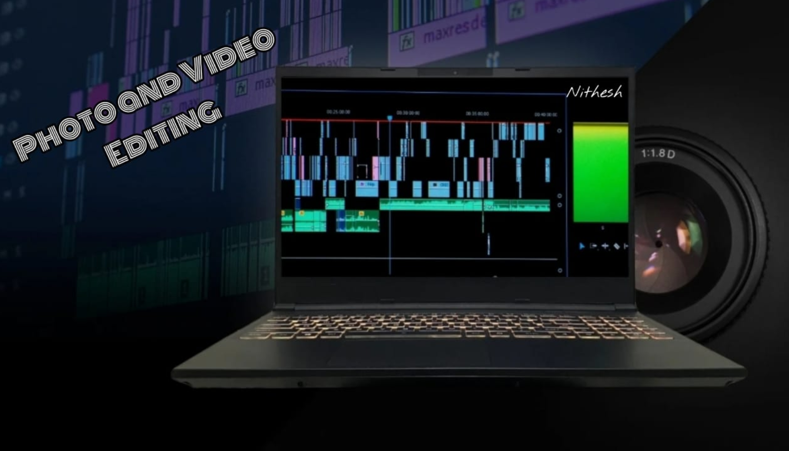

NK Editz
If you wanna edit anything .Contact me! I will do it for you!
I am a dedicated content editor with experience in enhancing videos, photographs, and written materials to meet high-quality standards. My approach to editing focuses on precision, creativity, and clarity—ensuring that every project I work on is both impactful and polished.
I offer professional editing services across multiple formats. My video editing includes trimming, sequencing, audio synchronization, and visual enhancement. For photo editing, I focus on color correction, retouching, and composition adjustments. In text editing, I provide grammar correction, content restructuring, and clarity improvements to ensure effective communication.
Each project begins with a detailed review of the raw content to understand its purpose and audience. From there, I apply a methodical and creative editing process tailored to the specific needs of the material. My goal is always to elevate the content’s quality while maintaining its original intent and voice.
I utilize industry-standard software such as Adobe Premiere Pro and Final Cut Pro for video editing, Adobe Photoshop and Lightroom for image editing, and tools like Grammarly and Microsoft Editor for refining written content. These tools, combined with my editing expertise, allow me to deliver professional results consistently.

Photo and Video Editing
Any kind of Editing will be done!
Great editing should go unnoticed—but its impact should be felt. I believe in subtle enhancements that make a powerful difference. I approach each project with a critical eye and a creative mindset, ensuring that the final product is not only polished, but purposeful.

Click the above link to view our page
I work with a suite of industry-leading tools including Adobe Premiere Pro, After Effects, Lightroom, and Photoshop for visual projects, and professional grammar and editing software for written content. These tools support my process, but it's the vision and execution that truly shape the outcome.
Contacts
tnithesh2006@gmail.com
Any kind of messages kindly send to the above mentioned mail id